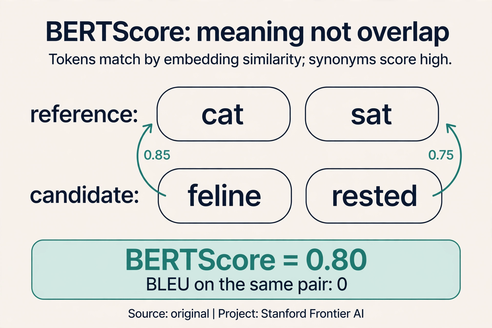
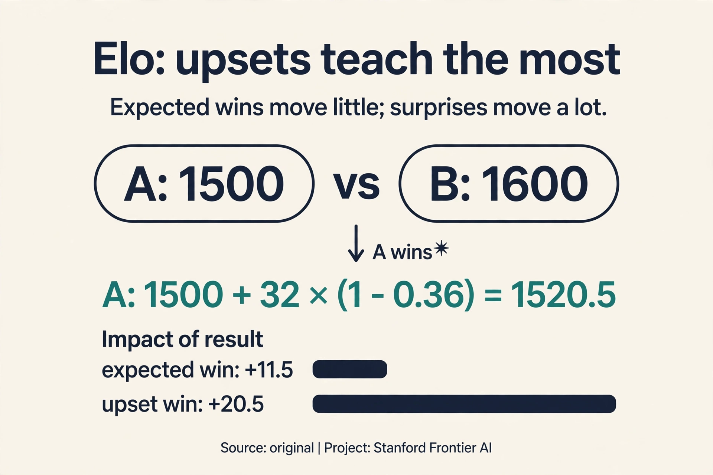
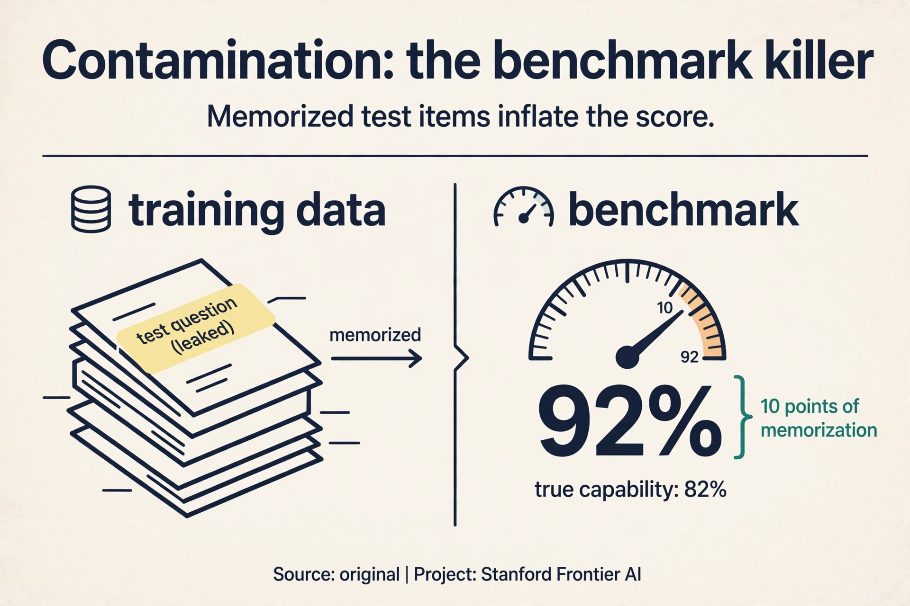

Lecture 11: Benchmarking and Evaluation
Video blocked (ad-blocker or local file mode).
Watch on YouTubeVideo not loading? Watch on YouTube
Original lecture. Yann Dubois covers benchmarking: automatic metrics, human evaluation, arenas, and LLM judges.
The problem: which model is better
Two models. One scoreboard. The question sounds simple and decides everything: what to ship, what to publish, what to train next. But “better” depends on the purpose, and the purpose decides the metric.

Four purposes:
- Train: the loss guides optimization. It must be differentiable, not truthful.
- Dev: early stopping picks the checkpoint. It must rank models correctly.
- Deploy: does it work in the real world? It must measure what users feel.
- Publish: academic eval must be reproducible, standardized, fast, and cheap. What matters is the direction over 10 years, not one number.
Tasks split into closed (fewer than 10 answers: multiple choice) and open-ended (summaries, dialogue). MMLU climbed from 25% to about 90% in roughly 4 years. Metrics saturate. The field moves on. A benchmark is a ruler, and rulers wear out.
First attempt: count overlaps
The cheapest automatic metrics count n-gram overlap against references.
BLEU: n-gram precision plus a brevity penalty. Watch why the penalty exists. Reference: “the cat sat on the mat” (6 words). Candidate: “the”.
unigram precision: "the" appears (clipped) 1/1 = 1.00 brevity penalty: exp(1 - 6/1) = exp(-5) = 0.0067 BLEU ≈ 0.0067
Without the penalty, predicting only “the” would game precision to 1.00. The penalty multiplies it by 0.0067. ROUGE flips the fraction: it uses recall instead of precision (how much of the reference did you cover). Semantic metrics (2016-2019) averaged embeddings and took cosines: overlap in meaning-space instead of word-space.

Where overlap breaks: “heck yes”
Reference: “heck yes” (23:54 ⏱23:54). Three candidates:

- “yes”: 67% BLEU. Partial match, partial credit. Fine.
- “yep”: 0 BLEU. False negative (24:39 ⏱24:39): means the same thing, scores zero. The metric punishes a correct answer.
- “heck no”: matches about 7x words. False positive: means the opposite, scores well. The metric rewards a wrong answer.
N-gram overlap is not meaning. It fails in both directions at once. ROUGE-L is uncorrelated with human judgments on standard references, though the lecture notes “the references are usually not great”: with expert-written summaries, correlation improves. The metric is only as good as the reference it compares against.
On this page: ROUGE · BERTScore · Elo math · Contamination · Eval in production, Oct 2026 · Watch and go deeper
Subchapter: ROUGE, recall instead of precision
BLEU asks: of the words you wrote, how many were in the reference? ROUGE asks the reverse: of the reference’s words, how many did you cover? Watch it on a toy. Reference: “the cat sat on the mat” (6 words). Candidate: “the cat sat” (3 words).
ROUGE-1 recall: 3/6 = 0.50 (covered half the reference) BLEU precision: 3/3 = 1.00 (everything written was correct)
BLEU without the brevity penalty calls this perfect. ROUGE calls it half. Summarization wants recall: a summary that drops half the content fails even if every kept word is right. Translation wants precision: extra words are the sin. The metric follows the task. ROUGE-L uses the longest common subsequence instead of raw n-grams, which forgives reordering a little. All ROUGE variants still count words, not meaning.
Subchapter: BERTScore, meaning not overlap
“The feline rested on the rug” means the same as “the cat sat on the mat” and scores near zero on BLEU. BERTScore (Zhang et al., 2020) fixes the representation: embed each token with a pretrained model, then match candidate tokens to reference tokens by cosine similarity.
Watch it on a toy. Reference tokens: {cat, sat}. Candidate: {feline, rested}. Cosine similarities: cat-feline 0.85, cat-rested 0.20, sat-feline 0.15, sat-rested 0.75. Greedy matching: feline to cat (0.85), rested to sat (0.75). BERTScore: (0.85 + 0.75) / 2 = 0.80. BLEU on the same pair: 0. Synonyms match because the embeddings know they are close. The price: BERTScore inherits the embedding model’s blind spots, and it still needs a reference. It measures meaning better than overlap, not meaning itself.

Subchapter: Elo math, how ratings move
Chatbot Arena ranks models with Elo, the chess rating. Two models, A at 1500, B at 1600. A user prefers A’s answer. Watch the update, with K = 32:
expected score of A = 1 / (1 + 10^((1600-1500)/400)) = 1 / (1 + 10^0.25)
= 1 / (1 + 1.78) = 0.36
actual score of A = 1 (it won)
new rating of A = 1500 + 32 x (1 - 0.36) = 1500 + 20.5 = 1520.5
new rating of B = 1600 - 20.5 = 1579.5
The upset moves 20.5 points: beating a stronger opponent pays more than beating a weaker one. Expected wins move almost nothing. 200,000 votes make the leaderboard stable. The weakness: Elo assumes transitive skill (if A beats B and B beats C, A beats C), which fails when models have different strengths on different tasks.

Subchapter: contamination, the benchmark killer
A benchmark measures generalization only if the model has not seen the test. Contamination is test data leaking into training. The web-scale corpora that train LLMs swallow benchmarks whole: MMLU questions appear in training text, and the model memorizes the answers. Watch the effect. A model scores 90% on a benchmark. Half the test items were in its training data (memorized: 100%), half were not (generalized: 80%). The reported 90% overstates true capability by 10 points.
Detection is n-gram filtering: flag test items whose long n-grams appear in training. Prevention is canary strings and fresh test sets. The deep problem: at web scale, perfect decontamination is impossible, and every public benchmark decays as it gets absorbed into training. The lecture’s rule generalizes: never just believe numbers, and believe public benchmark numbers least of all.

For fast iteration on similar systems. BLEU is cheap, reproducible, and directionally right when comparing close variants: if your change adds 2 BLEU on the same test set, it probably helped. It fails for open-ended generation, where many valid answers share no n-grams with the reference. Human evaluation first, then LLM judges. Reference-free evaluation asks a strong model (AlpacaEval, MT-Bench) to judge directly. No reference means no overlap gaming. But the judge brings its own biases, covered below.
The key question: what if humans judge
The gold standard is human evaluation. Axes: fluency, coherence, common sense, style, grammaticality, redundancy. And the gold standard is noisy:

AlpacaFarm: 5 researchers, 2-3 hours writing rubrics, and annotators reached only 67% agreement. Random guessing gives 50%. People even disagree with themselves: show the same annotator the same pair twice and the answers differ (intra-annotator disagreement). The rule: never compare human evals across papers. Different rubrics, different annotators, different numbers. A “human eval” score without its protocol is meaningless.
Chatbot Arena (44:03 ⏱44:03) industrialized the idea: 200,000 human votes, pairwise preferences, Elo ratings like chess, a live leaderboard. Pairwise is the right shape because humans are noisy: “which is better” is stable where “rate 1-7” is not.

LLM judges: 100x faster, with biases
LLM-as-judge: ask a strong model to judge. 100x faster and 100x cheaper than humans (46:42 ⏱46:42). GPT-4’s agreement with the human majority beats humans’ agreement with each other. AlpacaEval reaches 98% rank correlation with Chatbot Arena (51:24 ⏱51:24). For iteration, this is transformative: evaluate in minutes what took weeks.

But the judge has biases, and they are measured:
- Length bias: humans and models prefer longer outputs about 70% of the time (49:41 ⏱49:41), regardless of quality. Verbose wrong answers beat concise right ones.
- Monoculture: one judge’s bias applied to every model is worse than diverse human biases. Every model gets graded by the same prejudices.
- Fix: detailed rubrics for LLM judges. Vague instructions let biases run free. Specific criteria constrain them.
HELM and the HuggingFace leaderboard “look at everything”: many tasks, many metrics, no single number. And the deepest trap: implementation decides the number. LLaMA 65B on MMLU reads 63.7 (HELM), 63.6 (original), 48.8 (harness). Same model, different harness, different number. Never compare numbers across papers or harnesses. Reproduce the setup or do not cite the number.
For iteration, yes: 100x faster and cheaper with 98% rank correlation to human arenas. For final claims, keep humans. LLM judges share one model’s biases, and a monoculture of judgment is worse than noisy humans. Use detailed rubrics either way. Implementation variance. The same model scores 63.7, 63.6, or 48.8 on MMLU depending on the harness. Never compare numbers across papers or harnesses. Reproduce the setup or do not cite the number.
What is used where: eval in production, October 2026
| System | What it is | Public facts |
|---|---|---|
| LMArena (Chatbot Arena) | human pairwise votes, Elo | Public. The live leaderboard the field watches |
| AlpacaEval | LLM judge vs reference | Public. 98% rank correlation with Arena (2024 figure) |
| HELM | many tasks, many metrics | Public (Stanford). No single number |
| SWE-bench | real GitHub issues, tests | Public. The coding-eval standard |
| MMLU / GPQA / ARC-AGI | static benchmarks | Public. Contamination-decayed; still cited |
| Company-internal evals | private task suites | Not public. Every lab runs them; none publish the details |
The public stack is for comparison. The private stack is for shipping. No frontier lab picks a model on public benchmarks alone.
Reference: “heck yes”. Candidate 1: “yes”. Step 1, clipped unigram precision: “yes” appears once in the candidate and once in the reference: 1/1 = 1.00. Bigrams: “yes” alone has no bigram: skip. Step 2, brevity penalty: candidate length 1, reference length 2: exp(1 - 2/1) = exp(-1) = 0.37. BLEU = 1.00 x 0.37 = 0.37. Candidate 2: “yep”. Unigram precision: 0/1 = 0. BLEU = 0. Same meaning, zero score: the false negative. Candidate 3: “heck no”. “heck” matches: unigram 1/2 = 0.50, no brevity penalty (same length). Opposite meaning, nonzero score: the false positive. Without clipping, “the the the the” scores 4/4 = 1.00 against any reference containing “the”. Clipping caps each word’s matches at its reference count: “the” can match at most twice if the reference has it twice. Clipping stops pure repetition from gaming precision.
Three rungs. Rung 1, automatic: ROUGE-L for iteration speed, BERTScore for meaning. Both need references: use expert-written summaries, because the lecture shows correlation improves with good references. Rung 2, LLM judge: pairwise against the current production model, with a detailed rubric (faithfulness, coverage, concision). Rung 3, human: a sample of 200 summaries, pairwise, blind. Ship on rung 3, iterate on rungs 1-2. Never ship on ROUGE alone: it rewards extractive copying over good abstraction. Enough for the comparison to be significant: a few hundred pairwise judgments typically separate close models. Fewer if the gap is large. Budget for annotator disagreement: 67% agreement means you need more pairs than the math suggests.
A at 1500, B at 1600, K = 32. Expected score of A: 1/(1 + 10^(100/400)) = 0.36. A wins: actual 1. Update: A gains 32 x (1 - 0.36) = 20.5 points, B loses 20.5. If the favorite had won, B would gain 32 x (1 - 0.64) = 11.5: expected wins pay less. The system learns most from surprises. K sets the learning rate of the ratings. Too high and one lucky vote swings the board: noise. Too low and real skill changes take thousands of votes to register: lag. 32 is the chess standard, tuned over decades. Arena-scale voting (200K votes) tolerates it.
Both, in sequence. LLM judges for the shortlist: 100x faster and cheaper, 98% rank correlation, detailed rubrics to constrain bias. Humans for the final: the top 2-3 candidates, pairwise, blind, with a written rubric. The judge’s monoculture (one model’s biases grading everything) is the risk you pay a human panel to remove. Never let the judge pick the winner alone. Detailed rubrics first: vague instructions let length bias (70%) run free. Swap answer order to kill position bias. Use two different judge models and keep only agreements. And calibrate: measure the judge against human votes on a sample before trusting it.
N-gram filtering: take long n-grams (13-grams are standard) from the test items and search the training corpus. Matches mean the model may have memorized the item. Then run a clean split: score only the items with no matches. If the clean score drops far below 92%, the headline number was memorization. Also test on a fresh, private set: the gap between public and private scores is the contamination estimate. No. The web contains the benchmarks, their discussions, and their paraphrases. N-gram filters catch verbatim copies, not rewordings. Treat every public benchmark score as an upper bound on true capability, and build private evals for decisions that matter.
Watch and go deeper
What is BLEU score? (Standarity). N-gram precision and the brevity penalty.
Go deeper
- Holistic Evaluation of Language Models (Liang et al., 2022). HELM: many tasks, many metrics.
- BLEU: a Method for Automatic Evaluation of Machine Translation (Papineni et al., 2002). The original metric paper.
- LMArena. The live human-preference leaderboard.
- Stanford CS224N course site. Slides, assignments, syllabus.
Mapping back: what each method answers
| Measurement failure | Answer | How |
|---|---|---|
| Precision gaming (“the” scores 1.00) | Brevity penalty | exp(1 - 6/1) = 0.0067 kills the gaming |
| Overlap is not meaning (“yep” scores 0, “heck no” scores well) | Human judgment | AlpacaFarm, Chatbot Arena: 200,000 votes, Elo |
| Humans are slow, expensive, 67% agreement | LLM judges | 100x faster/cheaper. GPT-4 beats human-human agreement |
| One judge’s bias everywhere | Detailed rubrics + HELM | Constrain the judge. Look at everything |
| Numbers move with the harness (63.7/63.6/48.8) | Never compare across setups | Reproduce or do not cite |
The honest price
Every rung of the ladder has a cost. N-gram metrics are cheap and wrong about meaning. Humans are right and noisy: 67% agreement after hours of rubrics, and incomparable across papers. LLM judges are fast and biased: length wins 70%, and one judge’s prejudice grades every model. The lecture’s closing line: “never just believe numbers” (79:45 ⏱79:45). Believe the direction over 10 years. Verify the setup behind every number.
Recap: the whole lesson on one screen
- The problem. Which model is better? Four purposes: train, dev, deploy, publish. Purpose decides the metric. Benchmarks saturate: MMLU 25% to ~90% in ~4 years.
- First attempt. BLEU: n-gram precision plus brevity penalty. The toy: “the” alone scores 1.00 precision, killed to 0.0067 by the penalty. ROUGE uses recall.
- Overlap breaks. “heck yes”: “yes” 67%, “yep” 0 (false negative), “heck no” ~7x words (false positive). Overlap is not meaning, in both directions.
- Humans: gold and noisy. 67% agreement (50% is random) after 2-3 hours of rubrics. People disagree with themselves. Never compare across papers.
- Chatbot Arena. 200,000 pairwise votes, Elo ratings, live leaderboard. Pairwise because humans are noisy.
- LLM judges. 100x faster and cheaper. GPT-4 beats human-human agreement. AlpacaEval: 98% rank correlation. Length bias ~70%. Monoculture risk. Detailed rubrics.
- Implementation decides. LLaMA 65B MMLU: 63.7, 63.6, or 48.8 by harness. Same model. Reproduce the setup or do not cite.
- The rule. Never just believe numbers. Believe the direction. Verify the setup.
Official sources and further reading
Official: - Lecture 11 video and transcript. - Liang et al. (2022), HELM: holistic evaluation.
Further reading: - Zheng et al. (2023), “Judging LLM-as-a-Judge”: the bias analysis. - Chatbot Arena (LMSYS): the live leaderboard. - Papineni et al. (2002), BLEU: the original metric paper.
Caveats from these sources. “100x faster and cheaper” is the lecture’s price comparison at the time. Prices move. “98% rank correlation” is AlpacaEval versus Chatbot Arena specifically. The brevity-penalty toy above is an original teaching toy.
Connections to the other courses
- This course: L10’s models are what L11 evaluates. L07’s BLEU section was the preview. L04’s UAS/LAS are the same idea: task-specific metrics.
- CS336: evaluation systems in depth: perplexity, contamination, agent benchmarks.
- CS329H: social choice theory explains why pairwise voting (Elo) aggregates noisy preferences.
Sources
- VIDEOLecture 11 video, Stanford Online YouTube
- NOTESOfficial subtitle transcript
- PAPERLiang et al., Holistic Evaluation of Language Models (HELM, 2022)